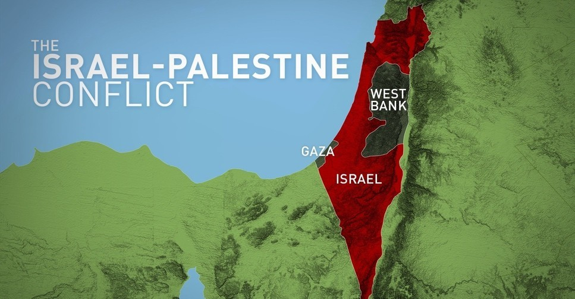

What, Who and Where is Palestine
- Until 1948, Palestine typically referred to the geographic region located between the Mediterranean Sea and the Jordan River. Arab people who call this territory home have been known as Palestinians since the early 20th century. Much of this land is now considered present-day Israel. Today, Palestine theoretically includes the West Bank (a territory that sits between modern-day Israel and Jordan) and the Gaza Strip (which borders modern-day Israel and Egypt). However, control over this region is a complex and evolving situation. The region (or at least a part of it) is also known as the Holy Land and is held sacred among Jews, Christians, and Muslims. Since the 20th century it has been the object of conflicting claims of Jewish and Arab national movements, and the conflict has led to prolonged violence and, in several instances, open warfare.
- There is no international consensus concerning the borders, and many areas claimed by Palestinians have been occupied by Israelis for years.
Population
- The social geography of modern Palestine, especially the area west of the Jordan River, has been greatly affected by the dramatic political changes and wars that have brought this small region to the attention of the world. In the early 21st century, Israeli Jews constituted roughly half of the population west of the Jordan, while Palestinian Arabs—Muslim, Christian, and Druze—and other smaller minorities accounted for the rest. The Jewish population is increasingly composed of persons born in Israel itself, although millions of immigrants have arrived since the founding of the State of Israel in 1948. The Arab population is descended from Arabs who lived in the area during the mandate period and, in most cases, for centuries before that time. The majority of both Jews and Arabs are now urbanized.
Israel History
- We cannot talk about Palestine without talking about Israel. Israels history is quite new and started in the late 19th and early 20th century, by an organized religious and political movement known as Zionism which emerged among Jews. Zionists wanted to basically reestablish a Jewish homeland in Palestine. Massive numbers of Jews immigrated to the ancient holy land and built settlements. Around 1882 and 1903, about 35,000 Jews moved and relocated to Palestine. Then another 40,000 settled in the area between 1904 and 1914. Many Jews who were afraid of the Nazi, found refuge in Palestine and embraced Zionism. Right after the WW2, the Zionist participates focused on creating a all Jewish independent state in Palestine.
- In 1947 the United Nations, created a plan to split or partition palestine to create a Jewish and Arab state, but of course the Arab Palestinians rejected this. The next year in 1948, Israel was officially considered an independent state, which also begun a time for conflict between the two. Following the announcement of an independent Israel, five Arab nations—Egypt, Jordan, Iraq, Syria, and Lebanon invaded the region in what became known as the 1948 Arab-Israeli War. Countless wars followed after the 1948 war, but fast forward to Israel today, clashes are still common between israel and Palestinians.
Two - state solution
- In recent years many countries, have proposed for a two state solution for the Arabs and the Jews. The Israeli Prime Minister has backed for a two state solution but has also been accused of encouraging Jewish settlements and destroying homes in Palestinian areas, which is considered illegal by the UN. Ultimatly the Palestinians have refused a two state solution as they say they want there homeland back, and Israel continues to expand its ilegal annexation, which includes areas that were given to the Palestinians